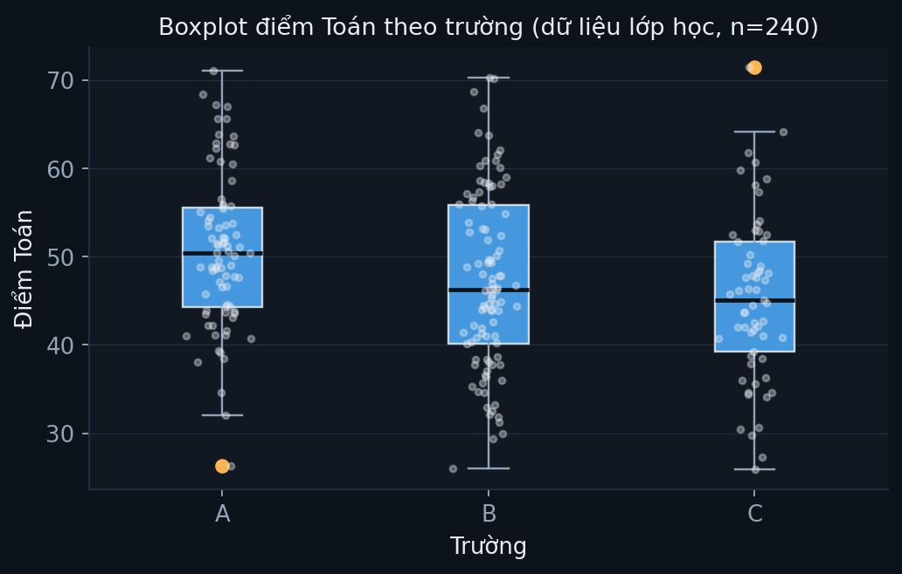
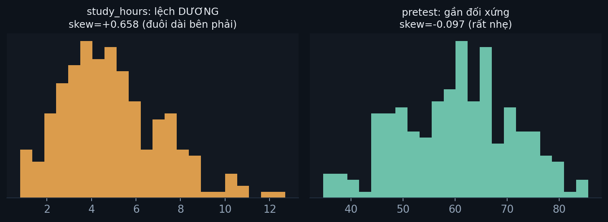

Xin lưu ý: nội dung trên trang này phần lớn do AI tạo ra. Người phụ trách không có đủ thời gian và nguồn lực để tự soạn thảo toàn bộ tài liệu khoá học ở mức hoàn thiện mong muốn, nên đã dùng AI để dựng nội dung, sau đó kiểm tra lại số liệu và đối chiếu với giáo trình gốc trong khả năng cho phép. Nếu phát hiện sai sót, rất mong được góp ý.
03 · Thống kê mô tả
Module 3/12 · Nội dung bám theo Cohen, Manion & Morrison, Research Methods in Education, ấn bản 8 (Routledge, 2018), chương 40 "Descriptive statistics", mục 40.1–40.4 (tr.753–765).
MODULE 03 · COHEN ET AL., CH.40
Thống kê mô tả
Dữ liệu thiếu, tần số, bảng chéo, xu hướng trung tâm & phân tán, hình dạng phân phối (skewness/kurtosis).
← → để chuyển slide.
PHẦN 1/5
01
Dữ liệu thiếu
Ba kiểu thiếu dữ liệu, không phải kiểu nào cũng vô hại
Listwise vs Pairwise: hai cách xoá, hai cái giá khác nhau
Lựa chọn thứ ba: ước lượng thay thế (imputation)
Ví dụ 3 ngành ngoài giáo dục
1 · Dữ liệu thiếu
Ba kiểu thiếu — không phải kiểu nào cũng "vô hại"
Kiểu
Đặc điểm
Mức độ nguy hiểm
MCAR
Hoàn toàn ngẫu nhiên, không khuôn mẫu
Thấp — an toàn nhất
MAR
Có khuôn mẫu, nhưng không liên quan trực tiếp giá trị đang xét
Vừa — cần kiểm tra
MNAR
Khuôn mẫu gắn liền chính giá trị thật
Cao — dễ gây sai lệch kết luận
🗣️ Nói nôm na: MCAR giống "rớt ngẫu nhiên vài trang trong lúc photo"; MNAR giống "người giấu thu nhập thật vì thu nhập thấp" — chính lý do giấu lại là cái bạn muốn đo.
Ví dụ thật
Biến h2 thiếu 3/240 ca (1,25%)
Không thấy khuôn mẫu rõ ràng ở 3 ca thiếu này (không tập trung vào 1 trường/1 giới tính cụ thể) → hợp lý xếp vào MCAR hoặc MAR nhẹ, không phải MNAR.
Vì tỉ lệ rất nhỏ (1,25%), ảnh hưởng tới kết quả cuối gần như không đáng kể dù chọn listwise hay pairwise.
Listwise vs Pairwise
Hai cách xoá dữ liệu thiếu, hai cái giá khác nhau
Listwise: loại cả trường hợp (cả dòng) nếu thiếu BẤT KỲ biến nào được đưa vào phân tích — kể cả biến không phải trọng tâm câu hỏi.
Pairwise: chỉ loại khi biến ĐANG tính bị thiếu — các phép tính khác trên cùng file giữ nguyên N.
Ví dụ: 1 học sinh thiếu riêng biến h2 → listwise loại học sinh đó khỏi MỌI phân tích trong lần chạy, kể cả phân tích không dùng h2.
Lựa chọn thứ ba
Ước lượng thay thế (imputation) — không chỉ có xoá
Thay vì xoá, điền giá trị hợp lý vào ô thiếu (vd trung bình của biến đó, hoặc dự đoán từ các biến khác).
Cái giá: làm giảm biến thiên THẬT của dữ liệu (SD tính ra nhỏ hơn thực tế) và có thể bóp méo hệ số tương quan giữa biến đã điền với biến khác.
Quy tắc chọn: tỉ lệ thiếu rất nhỏ (như h2, 1,25%) → xoá đơn giản hơn và an toàn hơn; tỉ lệ thiếu lớn (>10%) mới cân nhắc imputation.
Ví dụ đa ngành
Ba kiểu thiếu dữ liệu ở 3 lĩnh vực khác nhau
Ngành
Tình huống
Kiểu thiếu
Giáo dục (thật, site này)
3/240 học sinh thiếu điểm hứng thú h2, không theo khuôn mẫu rõ
MCAR
Y tế (minh hoạ)
Bệnh nhân bỏ dở điều trị vì tác dụng phụ NẶNG — chính mức độ nặng là lý do bỏ
MNAR
Kinh tế/khảo sát (minh hoạ)
Hộ thu nhập thấp có xu hướng từ chối trả lời câu hỏi thu nhập
MNAR
Hai ví dụ y tế/kinh tế đều là MNAR — nguy hiểm nhất vì chính giá trị thật quyết định có bị thiếu hay không, dễ làm kết luận cuối lệch về phía "nhẹ hơn thực tế".
PHẦN 2/5
02
Tần số & bảng chéo
Bẫy cỡ nhóm lệch khi đọc số đếm thô
Hai ví dụ thật: Giới × Phương pháp, Trường × Phương pháp
Chọn đúng loại biểu đồ theo thang đo
2 · Bảng chéo
Bẫy: cỡ nhóm lệch làm số đếm thô gây hiểu lầm

Luôn so sánh bằng % theo HÀNG khi hai nhóm cỡ khác nhau — % toàn bảng dễ bị nhóm lớn hơn áp đảo.
Ví dụ thật #1
Giới × Phương pháp học (240 HS)
Dự án
Truyền thống
Tổng
Nam (n=121)
63 (52,1%)
58 (47,9%)
121
Nữ (n=119)
52 (43,7%)
67 (56,3%)
119
Phép tính % hàng Nam: 63/121 = 0,521 → 52,1%. 63>52 (số thô) dễ hiểu nhầm — nhưng % hàng chỉ chênh ~8 điểm.
Ví dụ thật #2
Trường × Phương pháp — 3 trường, kết quả khác hẳn nhau
Trường
Dự án
Truyền thống
% chọn Dự án
A (n=80)
44
36
55,0%
B (n=99)
46
53
46,5%
C (n=61)
25
36
41,0%
Trường A có tỉ lệ chọn Dự án CAO hơn hẳn trường C (55,0% so với 41,0%) dù chênh lệch cỡ mẫu (80 so với 61) — một bảng chéo khác, một câu chuyện khác, không thể gộp chung kết luận.
Ví dụ đa ngành
Bảng chéo ở 2 lĩnh vực khác giáo dục
Ngành
Biến hàng × cột
Bẫy cần tránh
Y tế (minh hoạ)
Giới tính × Có tái khám đúng hẹn
Nhóm bệnh nhân nữ đông hơn → số đếm thô cao hơn dù TỈ LỆ tái khám có thể thấp hơn nam
Kinh tế/vùng miền (minh hoạ)
Khu vực (thành thị/nông thôn) × Hộ cận nghèo
Thành thị đông dân hơn → số hộ cận nghèo đếm thô cao hơn dù TỈ LỆ cận nghèo nông thôn mới là cao hơn
Cùng một bài học ở cả 3 ngành: số đếm thô phản ánh QUY MÔ nhóm, % hàng mới phản ánh XU HƯỚNG thật bên trong từng nhóm.
Chọn đúng biểu đồ
Loại biểu đồ phải khớp đúng thang đo của biến
Bar chart (biểu đồ cột rời): dữ liệu định danh/thứ bậc (vd trường A/B/C, giới tính) — các cột KHÔNG liền nhau vì không có thứ tự liên tục.
Histogram: dữ liệu khoảng/tỉ lệ liên tục (vd điểm Toán) — cột liền nhau, thể hiện phân phối tần số.
Boxplot: cho thấy CẢ trung tâm lẫn phân tán cùng lúc, so sánh được nhiều nhóm song song (vd điểm Toán theo 3 trường).
Scatterplot: KHÔNG dùng ở module này — dành cho 2 biến liên tục muốn xem quan hệ (Module 08).
PHẦN 3/5
03
Xu hướng trung tâm & độ phân tán
Mode · Median · Mean — dùng khi nào, công thức, ví dụ tính tay
3 tập số cùng mean nhưng SD khác hẳn
SD · Range · IQR — công thức, ví dụ tính tay
Ví dụ đa ngành
3 · Xu hướng trung tâm
Mode · Median · Mean — dùng khi nào?
Đo
Thang đo
Bền ngoại lai?
Mode
Mọi thang, đặc biệt định danh
Có
Median
Thứ bậc+
Có
Mean
Khoảng, tỉ lệ
Không
🗣️ Nói nôm na: Mode là "số đông chọn gì", Median là "người đứng chính giữa hàng", Mean là "chia đều cho tất cả" — mean dễ bị 1 người cực đoan kéo lệch, 2 cái kia thì không.
SD lớn → bệnh nhân rất khác nhau, phác đồ chung khó áp dụng đều
Kinh tế (minh hoạ)
Thu nhập hộ gia đình một khu vực
SD lớn → chênh lệch giàu-nghèo rõ rệt trong cùng khu vực
PHẦN 4/5
04
Hình dạng phân phối
Skewness (độ lệch) — công thức, cách đọc dấu
Kurtosis (độ nhọn) — cách đọc dấu
Ví dụ thật: một ngoại lai làm skew/kurtosis "nổ tung"
4 · Skewness
Độ lệch (skewness) — đuôi dài nằm về phía nào?
🗣️ Nói nôm na: tưởng tượng phân phối như một quả chuông bị kéo lệch — đuôi dài hướng về phía nào thì skew mang dấu đó.
Dấu skewness
Hình dạng
Quan hệ Mean vs Median
Dương (+)
Lệch phải, đuôi dài về giá trị LỚN
Mean > Median
≈ 0
Gần đối xứng
Mean ≈ Median
Âm (−)
Lệch trái, đuôi dài về giá trị NHỎ
Mean < Median
Ví dụ thật: pretest có mean=60,35 < median=60,95 → khớp đúng skewness đo được = −0,097 (lệch âm rất nhẹ).
Ví dụ thật — ngoại lai
study_hours: skewness=7,42 — dấu hiệu lỗi nhập liệu

Một học sinh có study_hours=48 (48 giờ/ngày — KHÔNG thể có thật, 1 ngày chỉ 24 giờ) kéo skewness từ mức bình thường lên 7,42 — cực đoan so với các biến khác (pretest −0,10, posttest −0,15, math +0,15).
Bài học: skewness quá lớn so với các biến cùng loại là tín hiệu ĐẦU TIÊN để nghi ngờ lỗi nhập liệu, trước khi tin vào bất kỳ phân tích nào dùng biến đó.
Kurtosis
Độ nhọn (kurtosis) — đỉnh nhọn hay bẹt so với phân phối chuẩn?
Dấu kurtosis
Tên gọi
Hình dạng
≈ 0
Mesokurtic
Độ nhọn giống phân phối chuẩn
Dương (+)
Leptokurtic
Đỉnh nhọn hơn, đuôi dày hơn (nhiều ngoại lai)
Âm (−)
Platykurtic
Đỉnh bẹt hơn, đuôi mỏng hơn
Cùng ví dụ study_hours: kurtosis=86,93 (cực đoan, do chính outlier 48 giờ/ngày ở trên) — so với pretest −0,54, posttest −0,19, math −0,33 đều gần mức bình thường.
Bảng tổng hợp
Skewness & Kurtosis — 4 biến thật, n=240
Biến
Skewness
Kurtosis
Diễn giải
pretest
−0,097
−0,535
Gần đối xứng, đỉnh hơi bẹt
posttest
−0,147
−0,193
Gần đối xứng
math
+0,148
−0,333
Gần đối xứng, lệch phải rất nhẹ
study_hours
+7,424
86,930
Cực đoan — do 1 ca lỗi nhập liệu (48 giờ/ngày)
Ví dụ đa ngành
Skewness thường gặp ở 2 lĩnh vực ngoài giáo dục
Ngành
Biến
Hình dạng điển hình
Kinh tế (minh hoạ)
Thu nhập cá nhân một quốc gia
Lệch phải RẤT mạnh — đa số thu nhập thấp/vừa, số ít cực giàu kéo đuôi dài
Y tế (minh hoạ)
Thời gian nằm viện sau phẫu thuật
Lệch phải — đa số hồi phục nhanh, số ít biến chứng nằm viện rất lâu
Cả hai ví dụ đều nổi tiếng lệch phải trong thực tế — đây là lý do vì sao báo cáo thu nhập hay dùng "trung vị", không dùng "trung bình" (trung bình dễ bị số ít cực giàu/cực bệnh kéo lệch).
PHẦN 5/5
05
Chọn đúng & áp dụng
Chọn đúng thống kê theo thang đo
Quy trình 3 bước trước khi mô tả bất kỳ biến nào
Thực hành trong SPSS/PSPP
Bước tiếp theo
5 · Taking stock
Chọn đúng thống kê theo thang đo
4 thang đo (Module 01) → tần số/%/mode/bảng chéo đều tính được cho mọi thang.
Thứ bậc trở lên → thêm được median.
Chỉ Khoảng & Tỉ lệ ("Scale" trong SPSS) → mới thêm được mean, SD, skewness, kurtosis.
Quy trình thực hành
3 bước trước khi mô tả BẤT KỲ biến nào
Bước 1 — Kiểm tra dữ liệu thiếu: MCAR/MAR/MNAR, quyết định xoá hay giữ (Phần 1).
Bước 2 — Nhìn hình dạng trước khi tin số: vẽ boxplot/histogram, đọc skewness/kurtosis (Phần 4) — bắt được ngoại lai/lỗi nhập liệu TRƯỚC khi tính trung bình.
Bước 3 — Chọn đúng đo trung tâm/phân tán theo thang đo (Phần 3) rồi mới báo cáo.
Bỏ qua Bước 2 là lỗi phổ biến nhất — nhiều người tính mean/SD ngay mà không nhìn phân phối, dễ bị ngoại lai như study_hours=48 đánh lừa.
Frequencies: mean/median/SD/skewness/kurtosis cho 1 biến liên tục.
Explore: boxplot so sánh nhiều nhóm + bảng Extreme Values dò ngoại lai.
PSPP: FREQUENCIES, EXAMINE, CROSSTABS — đã kiểm chứng chạy khớp 100% với Python.
Tiếp theo
Đọc sâu bên dưới, rồi tự kiểm tra 30 câu
Slide chỉ tóm tắt. Ví dụ số liệu đầy đủ + cú pháp SPSS/PSPP + lịch sử + case study nằm bên dưới. Module 04 tiếp theo: phân phối chuẩn & kiểm định giả thuyết.
1. Dữ liệu thiếu — đừng bỏ qua trước khi mô tả bất cứ gì
Ba kiểu thiếu dữ liệu (Rubin, 1976 — trích theo Cohen et al., tr.753):
Kiểu
Định nghĩa
Ví dụ
MCAR — thiếu hoàn toàn ngẫu nhiên
Không có khuôn mẫu nào ở dữ liệu thiếu
Máy quét phiếu lỗi ngẫu nhiên
MAR — thiếu ngẫu nhiên (có điều kiện)
Có khuôn mẫu, nhưng không liên quan trực tiếp biến phụ thuộc chính
Nam giới hay bỏ trống mục "cảm xúc" hơn — liên quan giới tính, không liên quan trực tiếp điểm số
MNAR — thiếu không ngẫu nhiên
Khuôn mẫu thiếu gắn liền với chính giá trị thật
Hộ thu nhập thấp không trả lời câu hỏi thu nhập
Hai cách xử lý chính: xoá (deletion) — listwise (loại cả trường hợp nếu thiếu bất kỳ biến nào) hoặc pairwise (chỉ loại khi biến đang tính bị thiếu); và ước lượng thay thế (imputation) — điền giá trị hợp lý (vd: trung bình), nhưng làm giảm biến thiên thật của dữ liệu và có thể ảnh hưởng phân tích tương quan (tr.754).
Ví dụ trên dữ liệu lớp học (240 HS): biến h2 có 3 ô thiếu (1,25%). Vì tỉ lệ rất nhỏ và không thấy khuôn mẫu rõ ràng, hợp lý nhất là loại theo pairwise khi tính tương quan liên quan h2, thay vì xoá toàn bộ 3 học sinh khỏi mọi phân tích.
2. Tần số, phần trăm & bảng chéo
SPSS/PSPP tính tần số + % tự động (FREQUENCIES). Biểu đồ cột/tròn hợp cho dữ liệu định danh-thứ bậc; histogram cho dữ liệu khoảng-tỉ lệ; boxplot cho thấy cả trung tâm lẫn phân tán cùng lúc (tr.754–757).
Boxplot điểm Toán theo 3 trường — dữ liệu thật, n=240. Hộp = 50% giữa; đường giữa = trung vị; điểm cam = ngoại lai. So khoảng hộp, KHÔNG chỉ so trung bình.
Bẫy bảng chéo: cỡ nhóm không đều làm số đếm thô gây hiểu lầm
Bảng chéo Giới × Phương pháp học (240 HS):
Dự án
Truyền thống
Tổng
Nam (n=121)
63 (52,1%)
58 (47,9%)
121
Nữ (n=119)
52 (43,7%)
67 (56,3%)
119
Nhìn số đếm thô, 63 > 52 khiến tưởng "Nam chọn Dự án nhiều hơn Nữ hẳn". Nhưng tính theo % hàng: 52,1% Nam vs 43,7% Nữ — chênh lệch có thật nhưng nhỏ hơn cảm giác ban đầu. Đây đúng là bẫy Cohen et al. cảnh báo ở ví dụ thư viện công cộng (Bảng 40.3–40.4, tr.758): luôn báo cáo cả số đếm lẫn %, và ưu tiên % theo hàng khi cỡ nhóm lệch nhau.
3. Xu hướng trung tâm & độ phân tán
Đo
Dùng cho thang đo
Bền với ngoại lai?
Mode (yếu vị)
Mọi thang đo, đặc biệt định danh
Có
Median (trung vị)
Thứ bậc trở lên
Có
Mean (trung bình)
Khoảng, tỉ lệ
Không — dễ bị ngoại lai kéo lệch
Ba đo độ phân tán: độ lệch chuẩn (SD) — trung bình khoảng cách mỗi điểm tới trung bình; range — max−min, rất nhạy ngoại lai; IQR — Q3−Q1, bền hơn range.
Trung bình mẫu (sample mean)
x̄ = Σxᵢ / n
x̄trung bình mẫu
Σxᵢtổng tất cả giá trị quan sát
nsố quan sát trong mẫu
Phương sai & độ lệch chuẩn mẫu (sample variance & SD)
s² = Σ(xᵢ − x̄)² / (n − 1) · s = √s²
s²phương sai mẫu — trung bình bình phương độ lệch so với x̄
(xᵢ − x̄)độ lệch của từng quan sát so với trung bình
n − 1bậc tự do — chia n−1 (không phải n) để ước lượng không chệch phương sai tổng thể (hiệu chỉnh Bessel)
sđộ lệch chuẩn mẫu — căn bậc hai phương sai, cùng đơn vị với dữ liệu gốc nên dễ diễn giải hơn s²
Tính tay trên ví dụ nhỏ: 3 điểm Toán {6, 7, 8} → x̄ = (6+7+8)/3 = 7. Độ lệch: (6−7)=−1, (7−7)=0, (8−7)=1. Bình phương: 1, 0, 1 → tổng=2. s² = 2/(3−1) = 1 → s = √1 = 1. Diễn giải: điểm số dao động trung bình khoảng ±1 quanh trung bình 7.
Ba tập số CÙNG trung bình = 6 (ví dụ Cohen et al., tr.762–764) nhưng SD khác hẳn nhau — minh hoạ vì sao chỉ báo cáo trung bình là chưa đủ.
Bài học: không bao giờ báo cáo một mình trung bình. Tập (1) có ngoại lai (giá trị 20) đẩy SD lên 7,91 — gấp 11 lần tập (3) dù cùng trung bình = 6. Luôn kèm SD hoặc vẽ biểu đồ.
4. Taking stock — chọn đúng thống kê theo thang đo
Quy tắc tổng hợp (tr.765): với cả 4 thang đo đều tính được tần số/%/mode/bảng chéo. Từ thứ bậc trở lên mới tính được trung vị. Chỉ khoảng & tỉ lệ (gộp thành "Scale" trong SPSS) mới tính được trung bình & độ lệch chuẩn. Dữ liệu lệch (skewed) một chiều — đuôi dài về phía dương gọi là lệch dương (positive skew), đuôi dài về phía âm là lệch âm (negative skew).
5. Thực hành SPSS/PSPP
🖱️ Từng bước bấm chuột trong SPSS (làm theo đúng thứ tự):
Vào menu Analyze → Descriptive Statistics → Frequencies...
Hộp thoại hiện ra: ở khung bên trái bấm chọn biến math, rồi bấm mũi tên ▶ ở giữa để đưa nó sang khung Variable(s) bên phải.
Bấm nút Statistics... ở góc dưới hộp thoại.
Cửa sổ mới hiện ra: tích vào các ô Mean, Median, Std. deviation, Minimum, Maximum, Skewness → bấm Continue để quay lại.
Bấm OK ở hộp thoại chính.
Kết quả hiện ra trong cửa sổ Output Viewer: tìm bảng "Statistics", đọc các hàng Mean/Median/Std. Deviation tương ứng với cột math.
B. Boxplot điểm Toán theo trường (Explore):
Analyze → Descriptive Statistics → Explore...
Đưa biến math vào ô Dependent List (bấm chọn biến rồi bấm mũi tên cạnh ô đó).
Đưa biến school vào ô Factor List.
Bấm nút Plots..., ở mục "Boxplots" chọn Factor levels together → Continue.
Bấm OK → biểu đồ boxplot xuất hiện trong Output Viewer, so sánh trực quan 3 hộp theo từng trường.
C. Bảng chéo giới tính × phương pháp dạy (Crosstabs):
Analyze → Descriptive Statistics → Crosstabs...
Đưa gender vào ô Row(s), đưa method vào ô Column(s).
Bấm nút Cells..., ở mục "Percentages" tích Row → Continue.
Bấm OK → đọc bảng tần số + phần trăm theo hàng trong Output.
Trình tự SPSS (Box 40.2, tr.765):Analyze → Descriptive Statistics → Frequencies → đưa biến vào ô Variables → nút Statistics: chọn đo trung tâm (mean/mode/median) + đo phân tán (SD/variance/range/min/max/SE) + đo hình dạng (skewness/kurtosis) → Continue → nút Charts: chọn loại biểu đồ → OK.
PSPP tương đương (đã kiểm chứng chạy được — xem pspp/03_thong_ke_mo_ta.sps ở trang Bộ dữ liệu):
FREQUENCIES VARIABLES=math /STATISTICS=MEAN MEDIAN STDDEV MIN MAX SKEWNESS.
EXAMINE VARIABLES=math BY school /PLOT=BOXPLOT /STATISTICS=DESCRIPTIVES.
CROSSTABS /TABLES=gender BY method /CELLS=COUNT ROW.
Thống kê mô tả không phải một phát minh đơn lẻ mà là kết tinh của nhiều dòng lịch sử khác nhau. Trước thế kỷ 19, "thống kê" gần như đồng nghĩa với đếm dân số phục vụ nhà nước (chữ "statistics" bắt nguồn từ "state" — nhà nước). Bước ngoặt lớn xảy ra khi các nhà cải cách xã hội bắt đầu dùng con số để THUYẾT PHỤC, không chỉ để đếm.
Ví dụ kinh điển: Florence Nightingale (1820–1910) — người sáng lập ngành điều dưỡng hiện đại — trong Chiến tranh Crimea đã thu thập dữ liệu tử vong của binh lính và phát hiện phần lớn cái chết đến từ bệnh truyền nhiễm do điều kiện vệ sinh kém, không phải từ chiến trận. Bà tự sáng tạo ra một dạng biểu đồ hình quạt (gọi là "coxcomb"/"rose diagram") để trình bày dữ liệu này cho Quốc hội Anh — một trong những ví dụ sớm nhất và nổi tiếng nhất về việc THỐNG KÊ MÔ TẢ làm thay đổi chính sách công thật sự.
Về mặt kỹ thuật, nhiều công cụ bạn học trong module này (boxplot, "whisker", phân tích dữ liệu khám phá) đến từ nhà thống kê John Tukey, người xuất bản cuốn Exploratory Data Analysis năm 1977. Trước Tukey, thống kê chủ yếu tập trung vào kiểm định giả thuyết (Module 05–07); Tukey nhấn mạnh bước NHÌN dữ liệu trước — chính là tinh thần "vẽ trước, tin số sau" xuyên suốt module này.
Dòng thời gian liên quan tới module này
Giữa TK 19 — Florence Nightingale dùng biểu đồ hình quạt để trình bày dữ liệu tử vong quân y, thuyết phục chính phủ Anh cải cách vệ sinh bệnh viện.
1893 — Karl Pearson đưa ra thuật ngữ "độ lệch chuẩn" (standard deviation) theo nghĩa hiện đại.
1977 — John Tukey xuất bản Exploratory Data Analysis, phổ biến boxplot và tư duy "khám phá dữ liệu bằng mắt trước khi kiểm định".
🔎 Case study thực tế
Case 1 — Nightingale và biểu đồ thay đổi một cuộc chiến
Trong Chiến tranh Crimea, quân đội Anh mất nhiều lính vì bệnh tật hơn vì súng đạn. Số liệu thô (bảng tần số tử vong theo tháng, theo nguyên nhân) đã tồn tại, nhưng KHÔNG ai hành động — cho tới khi Nightingale trình bày lại bằng biểu đồ trực quan. Đây chính là bài học "40.2 Tần số & biểu đồ" của module này ở quy mô lịch sử: cùng một dữ liệu, cách trình bày quyết định việc người đọc có hành động hay không.
Case 2 — Tukey và "nhìn trước khi tin"
Trước thập niên 1970, nhiều nhà nghiên cứu chạy thẳng kiểm định giả thuyết (t-test, ANOVA) mà không nhìn qua phân bố dữ liệu. Tukey chỉ ra: một bộ số liệu có thể "qua được" kiểm định nhưng vẫn chứa lỗi nhập liệu, ngoại lai, hoặc phân phối kỳ lạ mà chỉ boxplot/histogram mới lộ ra. Ba tập số cùng mean=6 ở slide trên chính là một phiên bản thu nhỏ của bài học Tukey: KHÔNG BAO GIỜ tin một con số tóm tắt duy nhất mà không nhìn qua hình dạng dữ liệu.
6. Tự kiểm tra (30 câu)
ℹ️ Thông tin về trang & liên hệ góp ý
🤖 Nội dung AI hỗ trợ soạn thảo
Phần lớn nội dung trên toàn bộ website này — giải thích khái niệm, câu hỏi tự kiểm tra, một số sơ đồ minh hoạ — được soạn với sự hỗ trợ của AI, sau đó người phụ trách kiểm tra lại trong khả năng cho phép (đối chiếu số liệu với dữ liệu thật, đối chiếu khái niệm với giáo trình gốc). Vì khối lượng nội dung lớn và thời gian có hạn, không thể đảm bảo mọi câu chữ đều đã được rà soát kỹ. Nếu phát hiện sai sót ở bất kỳ đâu, rất mong nhận được góp ý theo thông tin liên hệ bên dưới.
Nội dung bám theo sách Research Methods in Education (Cohen, Manion & Morrison, ấn bản 8, Routledge 2018). Vì lý do bản quyền, trang này không đính kèm file sách — ai cần bản PDF để tự đọc thêm ngoài bài giảng có thể tìm qua một số kênh không chính thống, ví dụ:
Lưu ý: các trang trên hay đổi tên miền hoặc bị chặn — nếu link nào không vào được, xin tự tìm tên miền mới của cùng dịch vụ.
🤝 Muốn đóng góp, hoặc xin tài liệu để tự dạy?
Rất hoan nghênh! Nếu bạn muốn giúp cải thiện học liệu (sửa lỗi, viết thêm module, dịch thuật...), hoặc muốn xin lại toàn bộ/một phần tài liệu này để tự dạy cho môn học khác của riêng bạn (không giới hạn ở SPSS/Khoa học Xã hội) — cứ thoải mái liên hệ:
Gửi email mô tả bạn muốn làm gì / cần gì, kèm link GitHub cá nhân nếu muốn được thêm quyền cộng tác trực tiếp vào project.